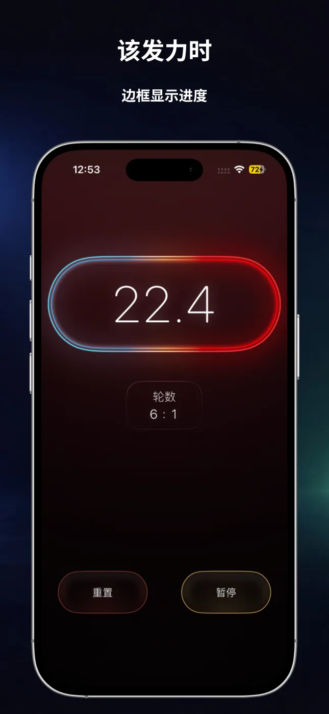
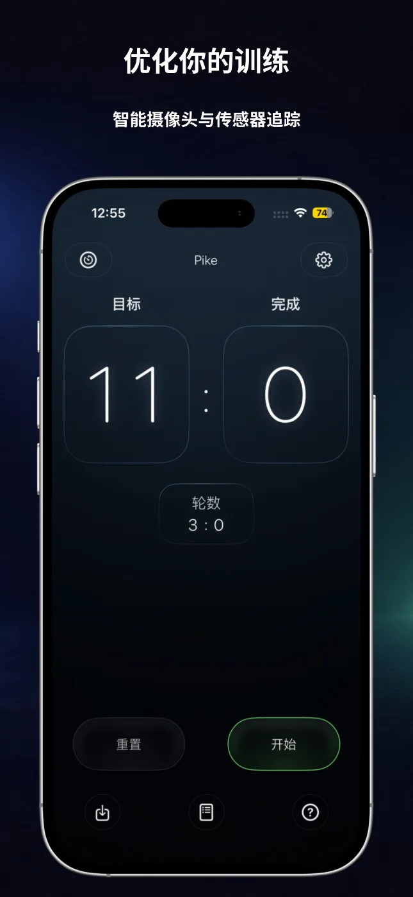
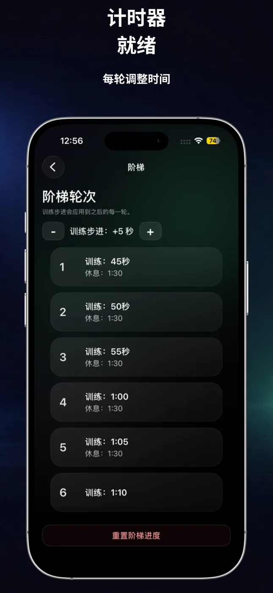
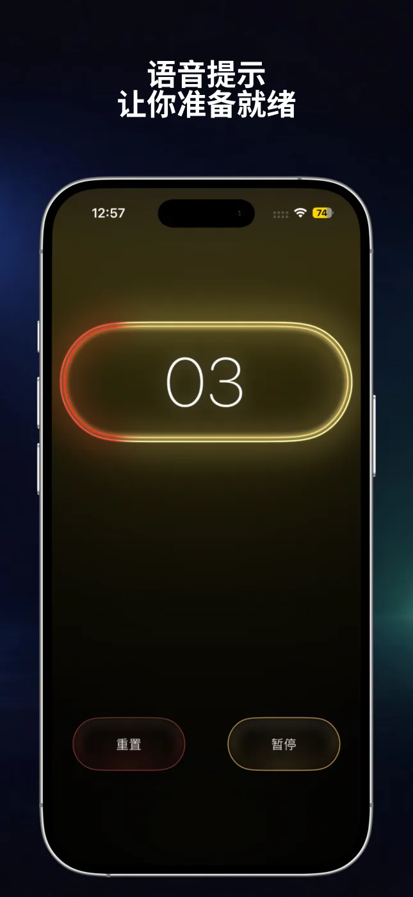
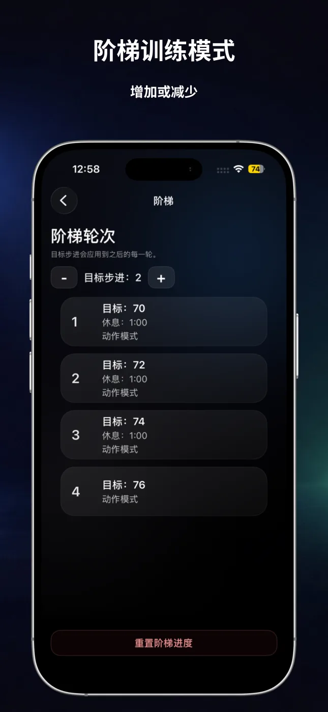
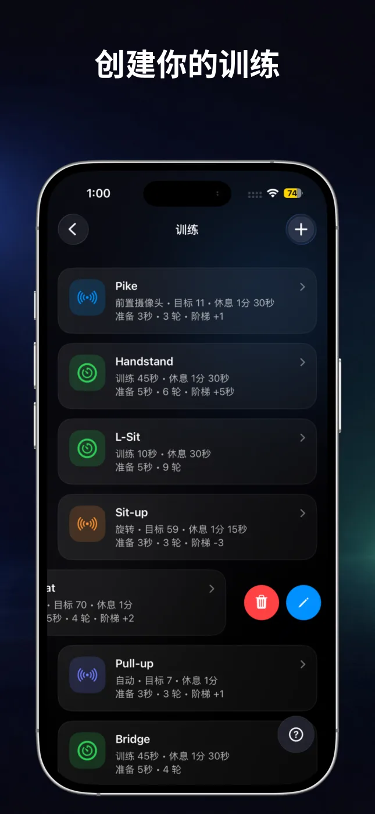

自动记录次数
选择运动、旋转、自动检测或前置摄像头，在训练时记录支持动作的完成次数。
RepChime 将精准的间歇计时器与自动次数计数结合在一起。设置训练、开始运动，让 iPhone 帮你掌握节奏。

无论按时间还是按目标次数训练，RepChime 都能清晰呈现训练结构，并保持操作简单。
选择运动、旋转、自动检测或前置摄像头，在训练时记录支持动作的完成次数。
分别设置训练、休息、准备和轮次，适用于短时循环、长时保持和重复间歇训练。
逐轮增加或减少时间与目标次数，轻松创建结构化的渐进训练。
通过倒计时声音、轮次提示和 RepChime Pro 可选语音指导，少看屏幕，专注动作。
保存计时器和计数器设置，编辑常用训练，只需轻点几下即可开始。
RepChime Pro 可通过实时活动，在锁定屏幕和灵动岛持续显示训练进度。
大号数字、清晰阶段和深色界面，让你在组间休息或远离手机时也能轻松看清。





两种模式都遵循同样清晰的流程：设置训练、点击开始，然后跟随视觉和声音节奏。
为训练、休息和准备分别设置时间，创建 HIIT、灵活性或静态保持训练。还可添加轮次、声音倒计时和时间阶梯。
设置目标并选择运动、旋转、自动或前置摄像头检测。RepChime 支持俯卧撑、仰卧起坐、引体向上和深蹲。
RepChime 是一款 iPhone 健身工具，提供可配置的 HIIT 计时器，以及能通过设备传感器或前置摄像头记录支持动作的目标计数器。
支持俯卧撑、仰卧起坐、引体向上和深蹲。可用的检测方式因动作而异，前置摄像头可用于俯卧撑。
可以。你可以保存计时器和计数器预设。RepChime Pro 提供更多预设容量和完整编辑功能。
不需要。训练预设和设置会保存在设备上。App Store 购买由 Apple 处理。